Apuntes de trinchera · 74 entradas · Teleasistencia, CIE-10-ES, docencia e IA
Entradas de blog
Lo que aprendo en SERMAS, aula y código. De cómo ordenar una historia clínica a cómo montar un RAG para teleasistencia. Notas sin humo.
74 publicados · 2025-2026
Todas las entradas
-
Formación profesional
Recursos TIC para crear una landing page educativa con gamificación
Google Sites, Google Forms, Kahoot! y un código QR para montar un pequeño entorno de aprendizaje digital: diseño, datos mínimos, juego con sentido, accesibilidad y protección de datos.
-
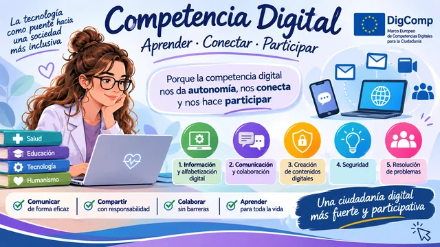
Formación profesional
Comunicar para participar: competencia digital en comunicación y colaboración
Una práctica educativa del Área 2 de DigComp: comunicar, compartir y colaborar con situaciones reales, checklist y evaluación basada en la autonomía.
-
Salud y organización
Rehabilitar sin sesgo estadístico: la edad no es un pronóstico
Un protocolo de cuatro fases para decidir a partir de la persona (su historia, su capacidad y su objetivo) y no de su fecha de nacimiento en un Centro de Rehabilitación Funcional.
-
Salud y organización
Envejecimiento saludable: clasificar recursos y herramientas para evaluar su impacto
Un mapa visual para distinguir qué recursos mejoran de verdad la vida de las personas mayores: tipos, ámbitos, funciones, herramientas clave y cinco preguntas para elegir bien.
-
Salud y organización
Envejecer no es solo cumplir años: es toda una vida
Envejecimiento demográfico, envejecimiento saludable y enfoque del curso vital: tres ideas para entender por qué cada etapa de la vida deja huella en las siguientes.
-
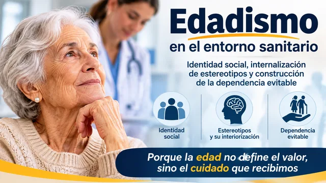
Salud y organización
Edadismo en el entorno sanitario
Identidad social, internalización de estereotipos y construcción de la dependencia evitable: cuando la edad se convierte en diagnóstico antes que la persona.
-
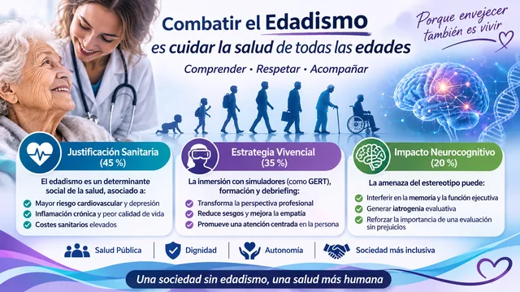
Salud y organización
El edadismo como determinante de salud
Justificación sanitaria, estrategia vivencial e impacto neurocognitivo en la práctica clínica: por qué combatir el edadismo es cuidar la salud de todas las edades.
-
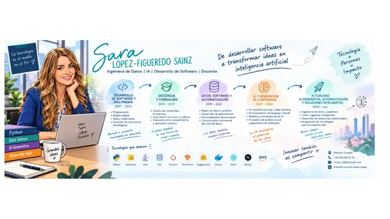
Trayectoria
Mi carrera no ha sido una línea recta, ha sido una evolución estratégica.
Una trayectoria nacida de la curiosidad por la tecnología: del desarrollo de software y la docencia a la sanidad, los datos y la IA.
-
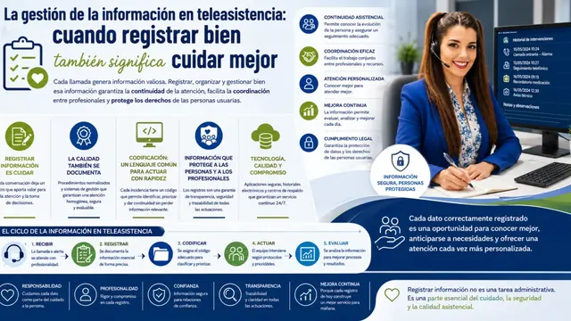
Teleasistencia
La gestión de la información en teleasistencia: cuando registrar bien también significa cuidar mejor
Registrar, organizar y gestionar bien la información garantiza continuidad, coordinación y calidad asistencial en teleasistencia.
-
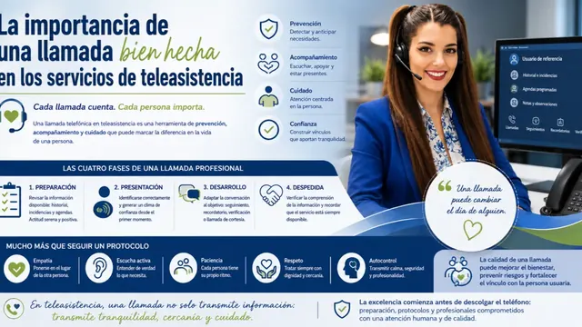
Teleasistencia
La importancia de una llamada bien hecha en los servicios de teleasistencia
La llamada como herramienta de prevención y cuidado: protocolos y comunicación que dan seguridad y cercanía.
-
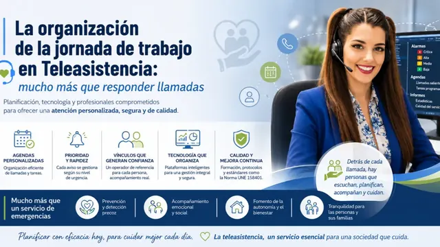
Teleasistencia
La organización de la jornada de trabajo en Teleasistencia: mucho más que responder llamadas
La jornada en teleasistencia es mucho más que responder llamadas: planificación, protocolos, herramientas y profesionales cualificados.
-
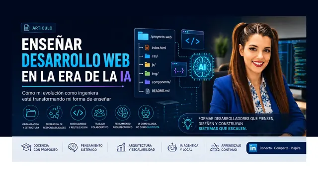
Formación profesional
Enseñar desarrollo web en la era de la IA: cómo mi evolución como ingeniera está transformando mi forma de enseñar
Cómo su evolución como ingeniera transforma la forma de enseñar desarrollo web en la era de la IA: del código a la arquitectura y el criterio.
-

Embeddings & PLN
¿Puede una IA entender el sarcasmo? Cuando el significado deja de estar en las palabras y pasa a depender de la intención
¿Puede una IA entender el sarcasmo? El significado depende de la intención más que de las palabras.
-

Embeddings & PLN
Cuando los embeddings dejan de representar palabras y empiezan a capturar significado: una mirada al lenguaje, la cultura y el contexto
Cómo un mismo modelo entiende textos en español, japonés o árabe: embeddings multilingües, cultura y contexto.
-

Embeddings & PLN
Cuando un vector deja de ser una lista de números: comprender cómo la IA representa el significado
Un embedding es mucho más que una lista de números: lo importante es cómo el modelo construye el significado.
-
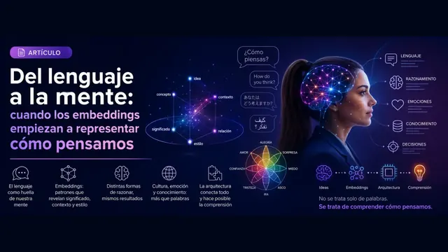
Embeddings & PLN
Del lenguaje a la mente: cuando los embeddings empiezan a representar cómo pensamos
¿Puede una IA representar cómo pensamos? Embeddings, estilo de escritura y ciencia cognitiva.
-
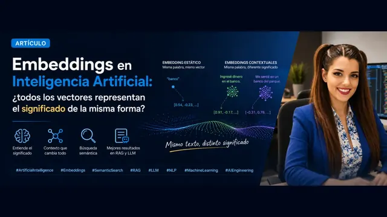
Embeddings & PLN
Embeddings en Inteligencia Artificial: ¿todos los vectores representan el significado de la misma forma?
Explica que no todos los embeddings se construyen igual y por qué eso condiciona la búsqueda semántica y los resultados de los modelos.
-
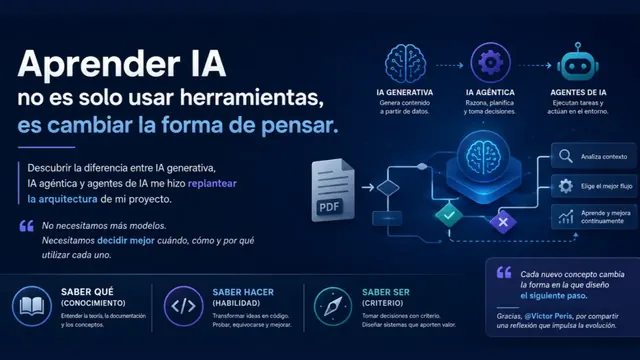
IA local
Aprender IA no es solo usar herramientas, es cambiar la forma de pensar.
Diferencia entre IA generativa, IA agéntica y agentes de IA, y cómo cambió la arquitectura de una plataforma de procesamiento inteligente de documentos.
-
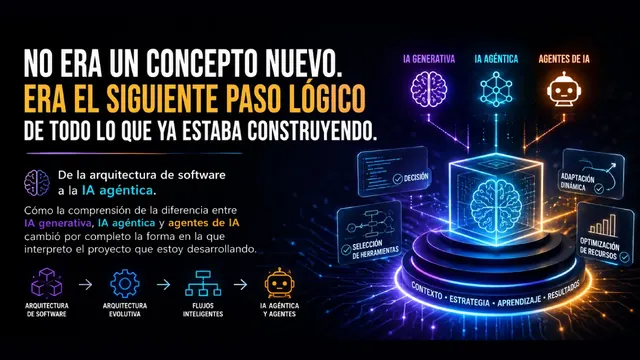
IA local
Cuando un nuevo concepto conecta todas las piezas del puzle
Segunda parte: cómo la IA local, los pipelines inteligentes y la IA agéntica resultan ser piezas de un mismo puzle.
-
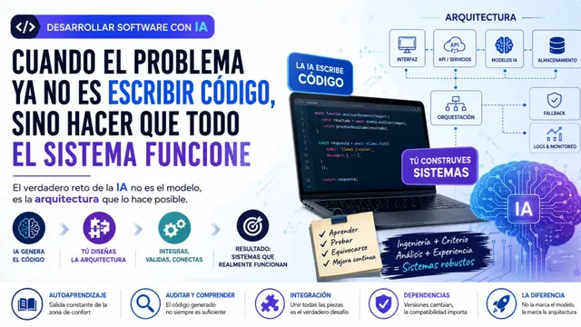
IA local
Desarrollar software con IA: cuando el problema ya no es escribir código, sino hacer que todo el sistema funcione
Desarrollar con IA no elimina los problemas de ingeniería: el desafío pasa de escribir código a lograr que todo el sistema funcione.
-
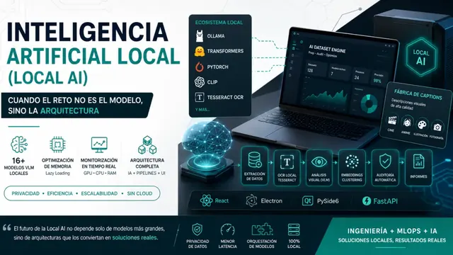
IA local
Inteligencia Artificial Local: el reto es la arquitectura, no el modelo
Lecciones de dos proyectos (AI Dataset Engine y Fábrica de Captions) para procesar información íntegramente en el equipo del usuario, sin APIs externas ni nube.
-
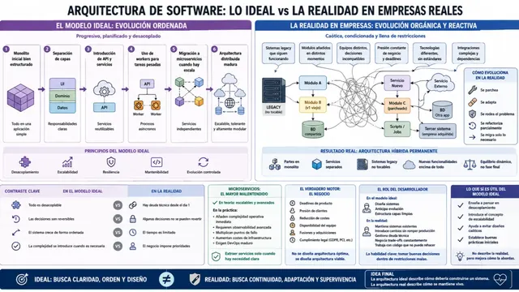
Arquitectura software
Arquitectura de software: lo ideal vs la realidad en empresas reales
La arquitectura en empresas reales no es una escalera ordenada, sino una negociación constante entre lo ideal y lo posible.
-
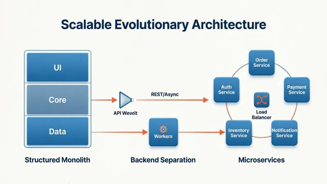
Arquitectura software
Arquitectura Evolutiva Escalable: cómo crecer sin reescribir todo
Arquitectura evolutiva: empezar simple pero preparado para crecer, evitando reescribir el proyecto desde cero.
-
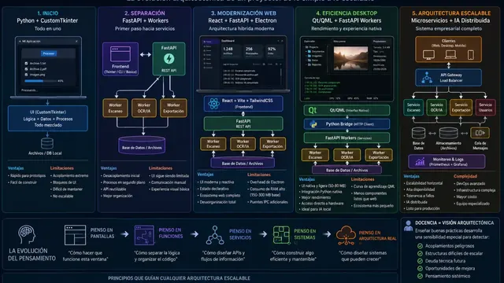
Arquitectura software
De crear interfaces a diseñar arquitectura real
Cómo la programación, la docencia y la escalabilidad cambian la forma de pensar el software: del primer programa en un solo archivo a una arquitectura que crece.
-
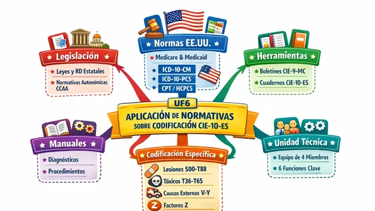
Codificación CIE-10-ES
Comprendiendo la Codificación CIE-10-ES y su Normativa: Guía para estudiantes de Documentación Sanitaria
Guía para estudiantes de la UF6: cómo aplicar las normativas de codificación CIE-10-ES para registrar bien la información clínica.
-
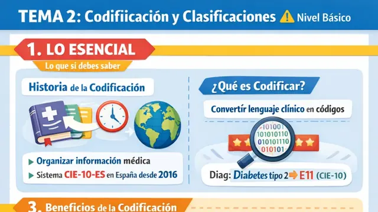
Codificación CIE-10-ES
¿Qué es la codificación clínica y por qué es clave en los sistemas sanitarios?
Por qué la codificación clínica estandariza diagnósticos y procedimientos, y qué aporta a la gestión y el análisis del sistema sanitario.
-
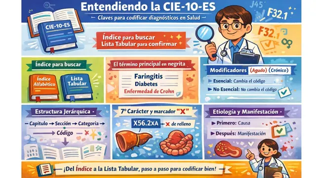
Codificación CIE-10-ES
Cómo entender la CIE-10-ES de diagnósticos sin volverse loco: guía sencilla
Guía sencilla de la estructura y las reglas básicas de la CIE-10-ES de diagnósticos para estudiantes y profesionales.
-
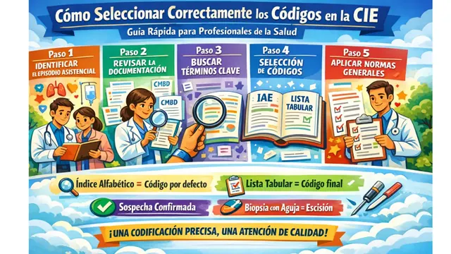
Codificación CIE-10-ES
Cómo Seleccionar Correctamente los Códigos en la CIE: Guía Rápida para Profesionales de la Salud
Proceso paso a paso para seleccionar el código correcto en la CIE: identificar el episodio asistencial y aplicar las reglas de codificación.
-
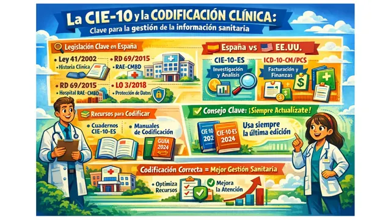
Codificación CIE-10-ES
La CIE-10 y la codificación clínica: Clave para la gestión de la información sanitaria
Legislación clave en España y aplicación de la CIE-10 para codificar diagnósticos y procedimientos con calidad y cumplimiento normativo.
-
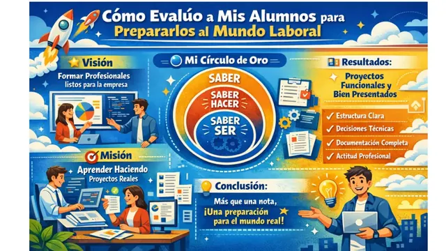
Formación profesional
Cómo Evalúo a Mis Alumnos para Prepararlos al Mundo Laboral
Cómo evalúa a su alumnado de certificados de profesionalidad simulando el trabajo en empresas reales: visión, criterios y preparación para el mundo laboral.
-
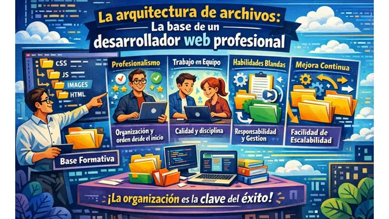
Formación profesional
La Importancia de una Arquitectura de Archivos Bien Organizada en Proyectos Web
Por qué la estructura de archivos es la base de un proyecto web y cómo enseñar buenas prácticas de organización desde el primer día.
-
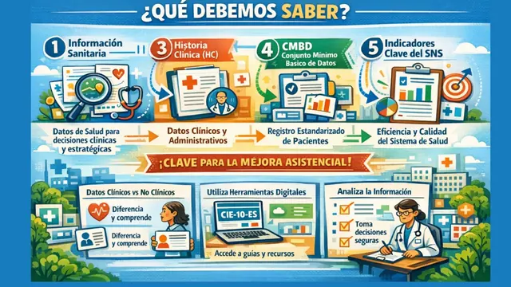
SIS
Sistemas de Información Sanitaria: Clave para la gestión y calidad en salud
Qué es la información sanitaria y cómo se organiza el SIS para apoyar la toma de decisiones, la planificación y la calidad asistencial.
-
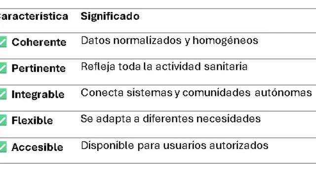
SIS
Sistemas de Información y Clasificación Sanitarios: Guía Visual para Estudiantes
Resumen visual y práctico para estudiantes sobre sistemas de información y clasificación sanitarios.
-
SIS
Sistemas de Información y Clasificación Sanitarios: una mirada desde la Documentación Sanitaria
Introducción a la gestión de la información en el sistema sanitario: qué datos se recogen y analizan, historia clínica, CMBD y sistemas de clasificación.
-
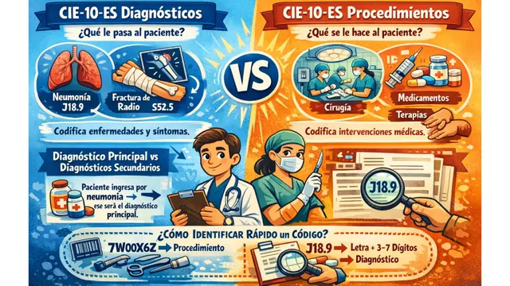
Codificación CIE-10-ES
Diferencia entre CIE-10-ES Diagnósticos y CIE-10-ES Procedimientos
Diferencias entre CIE-10-ES Diagnósticos y CIE-10-ES Procedimientos, y entre diagnóstico principal y secundario, explicadas de forma sencilla para estudiantes.
-
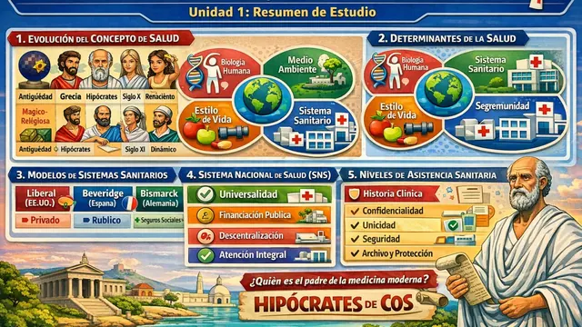
Salud y organización
Organización Sanitaria
Compendio de estudio: evolución del concepto de salud, determinantes (modelo de Lalonde), modelos de sistemas sanitarios, SNS español, niveles de asistencia y documentación sanitaria.
-
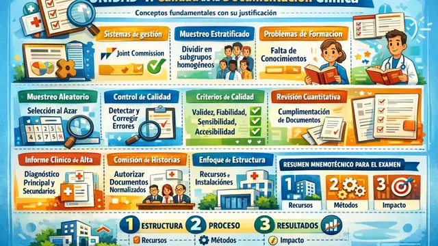
Documentación sanitaria
Calidad de la Documentación Clínica: Claves para Administrativos y Profesionales Sanitarios
La calidad de las historias clínicas como herramienta de seguridad del paciente: ISO 9000, EFQM, Joint Commission, control de calidad y Comisión de Historias Clínicas.
-
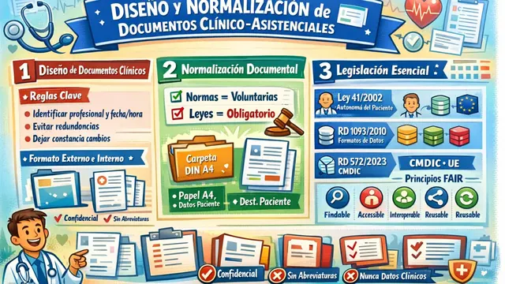
Documentación sanitaria
Diseño y Normalización de Documentos Clínico-Asistenciales
Cómo diseñar documentos clínicos (formato externo e interno), su normalización y legislación, y las ventajas de la historia clínica electrónica.
-
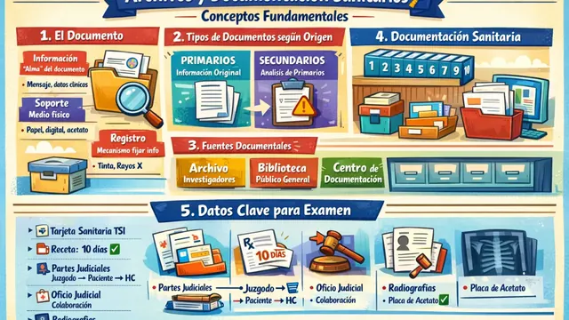
Documentación sanitaria
La Importancia de la Documentación Sanitaria: Guía para Administrativos
Guía para administrativos: qué es un documento sanitario, fuentes documentales, tipos (administrativa, clínica y médico-legal), circuitos de información y consejos para recordar lo esencial.
-
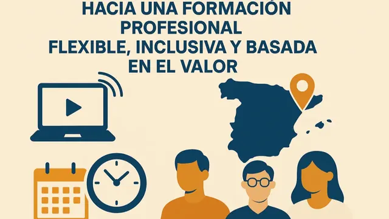
Formación profesional
Hacia una Formación Profesional flexible, inclusiva y basada en el valor
Crítica a la rigidez de la FP en España (sin reconocimiento de competencias, presencialidad obligatoria, poca formación pedagógica online) y propuesta de un modelo online flexible sobre Canvas, con itinerarios híbridos y certificación oficial.
-
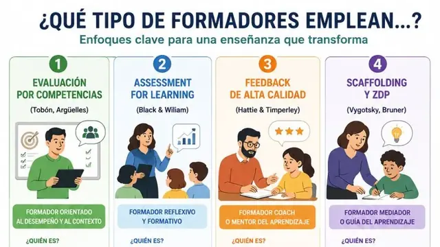
Formación profesionalPublicación
¿Eres un formador del siglo XX o del XXI?
Reflexión a partir de una infografía sobre cuatro enfoques de enseñanza transformadora: evaluación por competencias, assessment for learning y más.
-
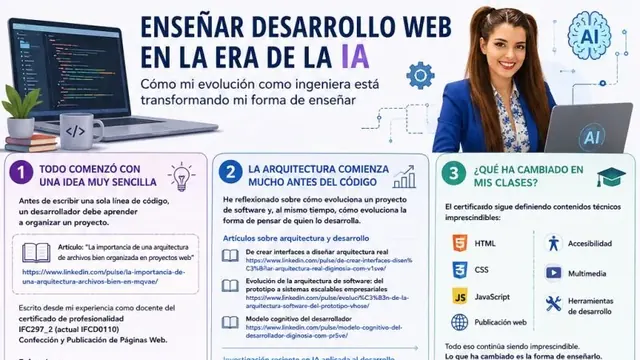
Formación profesionalPublicación
¿Está cambiando la forma de enseñar desarrollo web?
Publicación con infografía: el verdadero reto es enseñar a pensar como arquitectos de software, incluso con IA.
-
Formación profesionalPublicación
¿Qué significa realmente aprender a desarrollar páginas web?
Publicación del certificado IFC297_2: el aprendizaje va más allá de HTML, CSS y JavaScript, hacia analizar problemas y trabajar como profesionales.
-
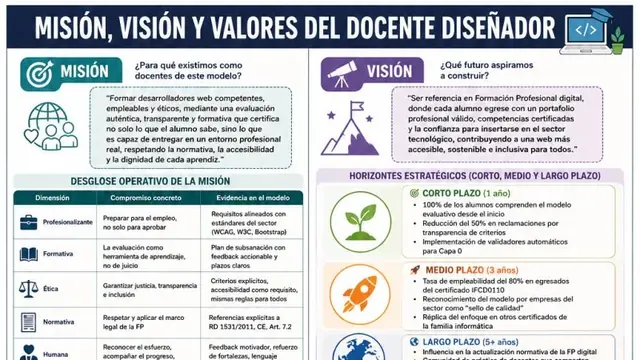
Formación profesionalPublicación
Mi compromiso como docente de FP en Desarrollo
Declaración de misión: formar desarrolladores competentes, empleables y éticos; evaluar con transparencia y acompañar el progreso de cada estudiante.
-
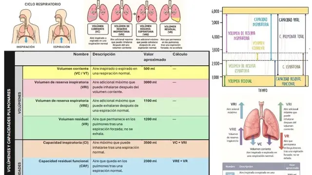
Salud y organizaciónPublicación
Fisiología respiratoria: volúmenes y capacidades pulmonares
Publicación divulgativa sobre volumen corriente, reservas y capacidad vital, y su utilidad para interpretar espirometrías, con un párrafo emocional y otro técnico.
-
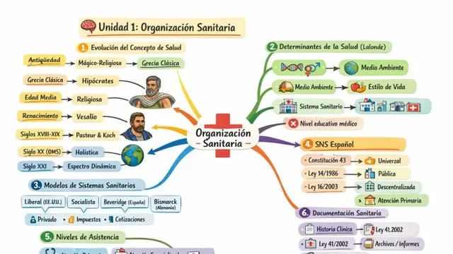
Salud y organizaciónPublicación
Organización sanitaria: publicación de presentación
Publicación de LinkedIn que presenta el compendio de organización sanitaria: historia de la salud, Hipócrates, Vesalio y determinantes de Lalonde.
-
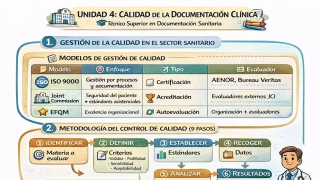
Documentación sanitariaPublicación
Calidad de la documentación clínica: resumen en LinkedIn
Resumen en formato publicación: estándares de la Joint Commission, ISO 9000 y EFQM, controles de calidad y papel de la Comisión de Historias Clínicas.
-
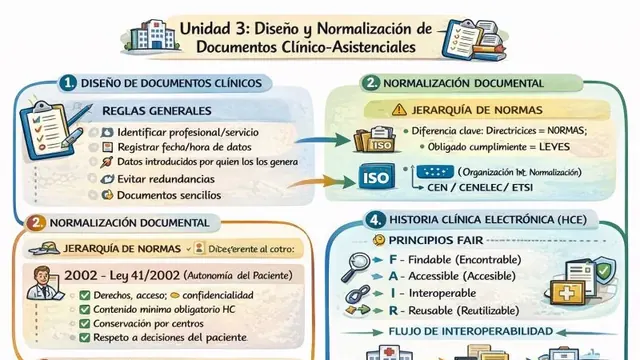
Documentación sanitariaPublicación
Documentos clínicos: publicación de presentación
Publicación breve sobre digitalización y estandarización de los documentos clínicos y su impacto en la seguridad del paciente.
-
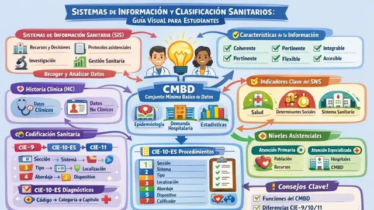
SISPublicación
Sistemas de información: material gráfico de apoyo
Entrada de apoyo con contenido visual, sin texto propio, complementaria a la guía visual.
-
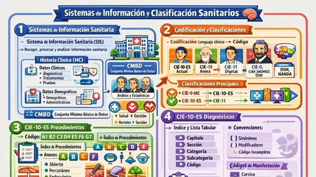
SISPublicación
Tema 1: Sistemas de Información Sanitaria
Resumen de estudio del SIS: historia clínica, CMBD, indicadores de salud y su papel en la gestión, la planificación y la investigación.
-
Codificación CIE-10-ESPublicación
Codificación CIE-10 (UF6): legislación y normativa
Resumen de estudio de la UF6: Ley 41/2002, RD 69/2015, LO 3/2018 y demás normativa estatal sobre historia clínica, RAE-CMBD y protección de datos.
-
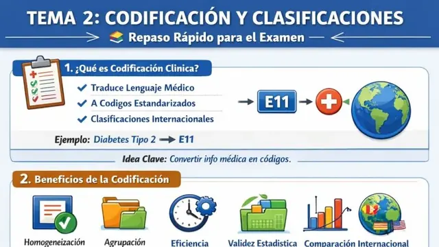
Codificación CIE-10-ESPublicación
Codificación clínica: material gráfico de apoyo
Entrada de apoyo con contenido visual, sin texto propio, ligada a la codificación clínica.
-
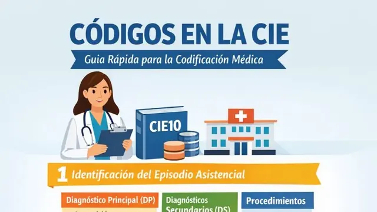
Codificación CIE-10-ESPublicación
Selección de códigos CIE: material gráfico de apoyo
Entrada de apoyo con contenido visual, sin texto propio, complementaria a la guía rápida de codificación.
-
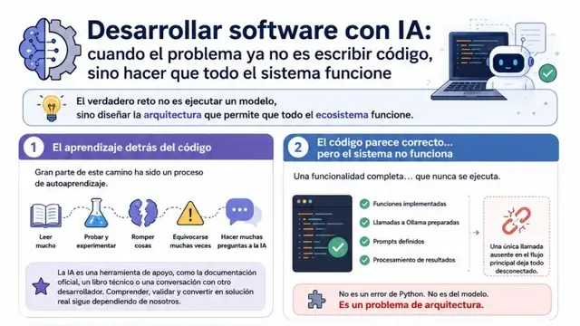
IA localPublicación
¿Escribir código con IA? Eso es lo de menos
Publicación sobre una infografía: la IA genera buen código, pero la arquitectura y la integración siguen siendo responsabilidad humana.
-
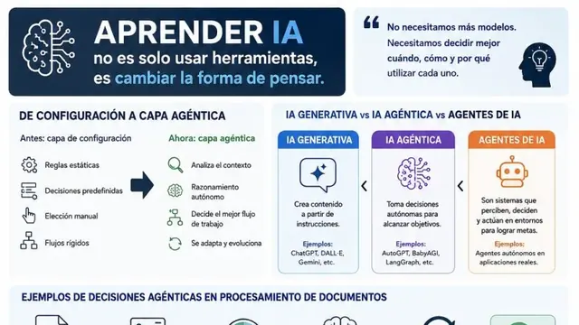
IA localPublicación
Aprender IA: una nueva forma de pensar
Publicación que resume cómo un concepto teórico cambió la dirección del proyecto, con infografía.
-
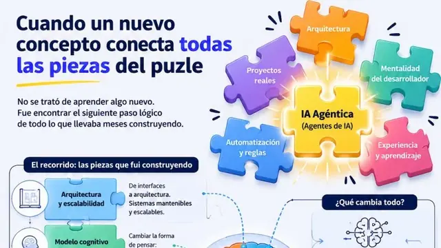
IA localPublicación
El concepto que hace que todo cobre sentido
Publicación con infografía sobre el momento en que arquitectura, IA local, pipelines e IA agéntica encajan.
-
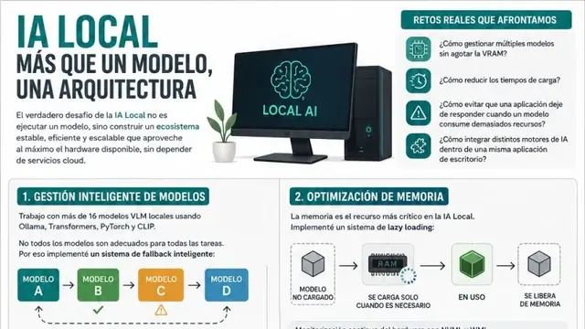
IA localPublicación
IA Local: más que un modelo, una arquitectura completa
Publicación con las claves de una arquitectura de IA local robusta: gestión de más de 16 modelos locales, estabilidad y uso eficiente del hardware.
-
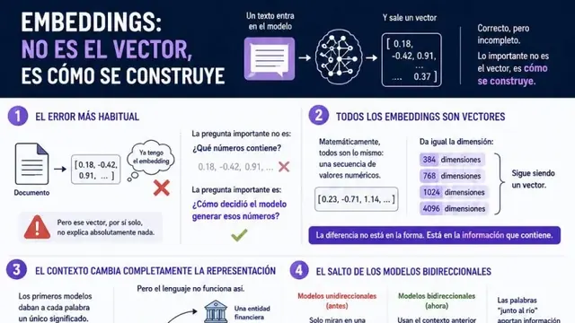
Embeddings & PLNPublicación
¿Llevas años entendiendo mal qué es un embedding?
Publicación que anticipa el cambio de perspectiva: el valor no está en el vector, sino en cómo se construye el significado.
-
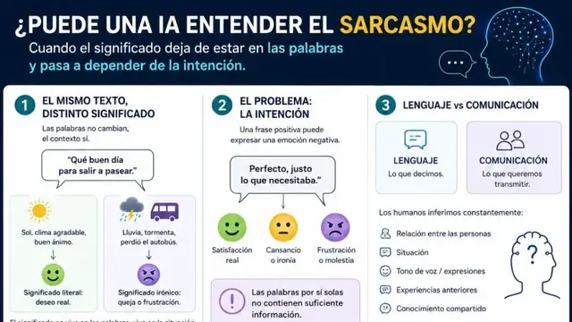
Embeddings & PLNPublicación
¿Puede una IA detectar cuando le estás tomando el pelo?
Publicación con la misma frase y significados opuestos: el sarcasmo como gran reto para la IA actual.
-
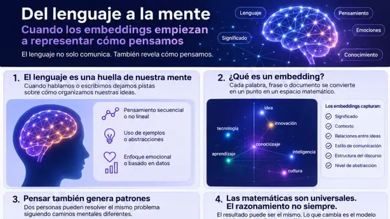
Embeddings & PLNPublicación
Del lenguaje a la mente
Publicación que resume la revelación: pasar de representar palabras a preguntarse si la IA puede representar el pensamiento.
-
Embeddings & PLNPublicación
Dos embeddings con la misma forma, significados distintos
Publicación con infografía sobre por qué vectores iguales en forma pueden representar el significado de modo diferente.
-
TeleasistenciaPublicación
¿Estamos preparados para el reto del envejecimiento?
Tendencias del sector sociosanitario: salud mental, prevención de la demencia, teleasistencia e innovación en el cuidado de mayores.
-
TeleasistenciaPublicación
¿Qué hace efectiva una llamada de teleasistencia?
Publicación con esquema de fases, técnicas y buenas prácticas que convierten una llamada en una intervención profesional y humana.
-
TeleasistenciaPublicación
¿Qué hay detrás de una simple llamada de teleasistencia?
Hoja de ruta de una intervención de calidad: de la gestión rutinaria a la detección temprana de emergencias.
-
TeleasistenciaPublicación
¿Quiénes hacen posible la teleasistencia?
Los seis perfiles profesionales del equipo, de la dirección del proyecto a la primera respuesta en domicilio.
-
TeleasistenciaPublicación
Derechos y deberes en teleasistencia
Los pilares de una atención humana y eficaz: derechos fundamentales y deberes de la persona teleoperadora.
-
TeleasistenciaPublicación
Los 5 libros de registro de la teleasistencia
Los registros obligatorios que garantizan trazabilidad, cumplimiento normativo y calidad asistencial.
-
TeleasistenciaPublicación
No todas las llamadas de teleasistencia son iguales
Guía para priorizar agendas, por ejemplo entre una medicación urgente y un seguimiento importante.
-
TeleasistenciaPublicación
Una agenda bien gestionada puede salvar vidas
La gestión de agendas como acto de cuidado: detectar necesidades, prevenir emergencias y crear vínculos de confianza.
-
TeleasistenciaPublicación
Una llamada puede marcar la diferencia entre soledad y seguridad
Tipos de llamadas (informales, estructuradas, de seguimiento) y cómo adaptar su duración a cada necesidad.
-
TeleasistenciaPublicación
Una sola palabra puede marcar la diferencia
Cómo adaptar la comunicación a cada perfil de persona usuaria: mayores, víctimas de violencia, discapacidad y cuidadores.
-
TrayectoriaPublicación
La salud también se construye desde la gestión y la tecnología
Cierre de trayectoria: la diversidad de experiencias converge en la salud digital y la gestión del conocimiento.
-
TrayectoriaPublicación
Mi Hipótesis de Futuro: una carrera como mapa de conexiones
Ejercicio de estrategia profesional: integradora que conecta sanidad, IA, datos, comunicación y gestión del cambio.
-
TrayectoriaPublicación
Mi trayectoria no ha sido lineal
Todas las etapas, del software a la documentación clínica, forman una misma evolución con propósito.
No hay entradas que coincidan con tu búsqueda.